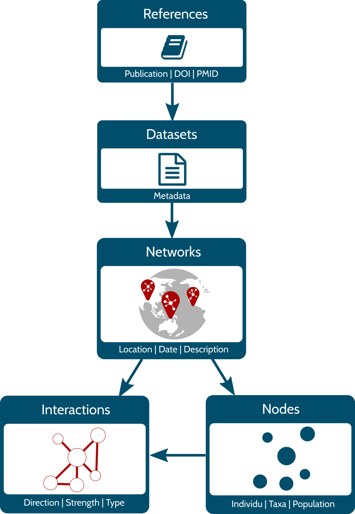
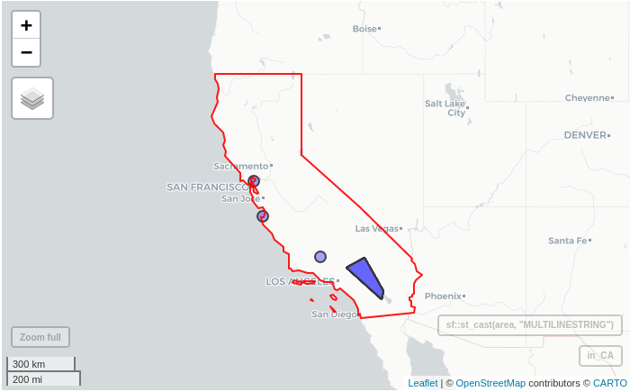
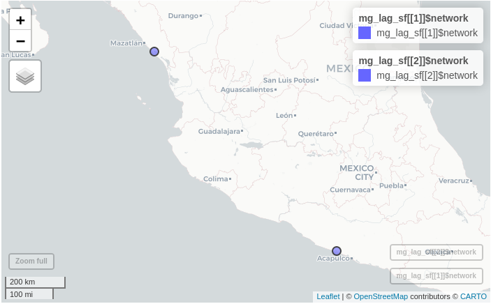

Get started with rmangal
Steve Vissault & Kevin Cazelles
2023-03-29
Source:vignettes/rmangal.Rmd
rmangal.RmdContext
The Mangal project
The Mangal project aims at archiving published ecological networks and at easing their retrieval. To do so, Mangal:
uses a data specification for ecological networks (described in Poisot et al. 2016);
archives ecological networks in a PostgreSQL database;
provides:
- a data explorer to visualize and download data available;
- a RESTful Application Programming Interface (API);
- a client library for Julia: Mangal.jl;
- a client of this API for R: the rmangal package described below.
Currently, 172 datasets are including in the database representing over 1300 ecological networks. In 2016, the first paper describing the project was published and introduced the first release of rmangal (Poisot et al. 2016). Since then, the structure of the database has been improved (new fields have been added), several ecological networks added and the API entirely rewritten. Consequently, the first release of the rmangal is obsolete (and archived) and we introduce rmangal v2.0 in this vignette.
Data structure

The diagram on the left side represents the structure of the Mangal database. All references included in Mangal correspond to a specific publication that includes one or several dataset(s). This dataset is basically a collection of ecological networks whose nodes and interactions (edges) are stored in separate tables. Below, we briefly describe the content of each table.
References – Information pertaining to a reference (scientific article, book, online website, etc.) characterizing an original collection of ecological networks. URLs of data and publication sources are included as well as persistent identifiers (when available) such as digital object identifiers (DOIs). This allows the user to retrieve more details about original publications using appropriate R packages such as crossref.
Datasets – Metadata of the datasets attached to a reference. It includes a general description of the networks.
Networks – Metadata of the networks attached to a dataset. It provides the sampling location, date and specific description of the network.
Nodes – Information on the population, taxa or individu in the network. Each node has the original taxon name documented and taxonomic backbone provided by all services embedded in taxize (Chamberlain et al. 2019).
Interactions – Information on the interaction type (e.g. mutualism, predation, etc.), the strength, and the direction of the interaction between two nodes.
Authentication
So far, the rmangal package provides methods to get access to the data store. Data requests (performed via httr::GET()) do not require any authentication.
A bearer authentication strategy using ORCID credentials (as a third-party services) has been implemented on all POST, DELETE, PUT API operations to allow the user to add and delete new ecological to the data base. These features are not currently included in the rmangal package, but are under consideration for future major releases.
How to use rmangal
Overall approach
In order to efficiently retrieve networks from the database, rmangal includes 7 search functions querying the 5 tables described above as well as a table dedicated to the taxonomy backbone.
-
search_references(): search in the reference table, for instance the user can look for a specificdoi; -
search_datasets(): search among datasets using a keyword; -
search_networks()andsearch_networks_sf(): search networks based on a keyword or a geographical area; -
search_interactions(): list all networks containing a specific interaction type; -
search_nodes(): identify nodes based on nodes information; -
search_taxonomy(): identify nodes based on taxonomic names and unique identifiers.
All of these functions return specific class objects with the information needed to retrieve the corresponding set of ecological networks with get_collection(). Hence, the user can easily retrieve data in two steps:
networks <- search_*() %>% get_collection()Note that if there is only one network to be retrieved, get_collection() returns a mgNetwork object, otherwise it returns an object of class mgNetworksCollection which is a collection (a list) of mgNetwork objects. Below, we exemplify how to use the search functions, how to get a collection of networks and how to use other packages to carry out specific analyses.
Search functions
In rmangal, every functions queries a specific table and allow only one query at a time (see section Batch analysis to learn how to perform more than one query). All the functions offer two ways to query the corresponding table:
- a keyword: in this case, the entries returned are the partial or full keyword match of any strings contained in the table;
- a custom query: in this case, entries returned are exact matches.
Let’s load rmangal as well as two helper packages:
library(rmangal)
library(magrittr) # for the pipe %>%
library(tibble) # to use tibble (enhanced data frames)Search and list available datasets
Let’s assume we are looking for ecological networks including species living in lagoons. If we have no idea about any existing data set, the best starting point is then to query the dataset table with lagoon as a keyword:
lagoon <- search_datasets(query = "lagoon")
class(lagoon)
#> [1] "tbl_df" "tbl" "data.frame" "mgSearchDatasets"
lagoon
#> # A tibble: 2 × 10
#> id name description public created_at updated_at ref_id user_id references networks
#> <int> <chr> <chr> <lgl> <chr> <chr> <int> <int> <list> <list>
#> 1 22 zetina_2003 Dietary matrix of the Huizache–Caimanero lagoon TRUE 2019-02-23T17:04:32.017Z 2019-02-23T17:04:32.017Z 22 3 <df [1 × 11]> <df [1 × 13]>
#> 2 52 yanez_1978 Food web of the Guerrero lagoon TRUE 2019-02-24T23:42:52.062Z 2019-02-24T23:42:52.062Z 53 3 <df [1 × 11]> <df [2 × 13]>If the Mangal reference id containing the lagoon networks was known, we could build a custom query as follow:
lagoon_zetina <- search_datasets(list(ref_id = 22))
lagoon_zetina
#> # A tibble: 1 × 10
#> id name description public created_at updated_at ref_id user_id references networks
#> <int> <chr> <chr> <lgl> <chr> <chr> <int> <int> <list> <list>
#> 1 22 zetina_2003 Dietary matrix of the Huizache–Caimanero lagoon TRUE 2019-02-23T17:04:32.017Z 2019-02-23T17:04:32.017Z 22 3 <df [1 × 11]> <df [1 × 13]>Note that if an empty character is passed, i.e. "", all entries are returned. We can use this behavior to list all datasets available:
all_datasets <- search_datasets("", verbose = FALSE)
head(all_datasets)
#> # A tibble: 6 × 10
#> id name description public created_at updated_at ref_id user_id references networks
#> <int> <chr> <chr> <lgl> <chr> <chr> <int> <int> <list> <list>
#> 1 2 howking_1968 Insect activity recorded on flower at Lake Hazen, Ellesmere Island, N.W.T., Canada TRUE 2019-02-22T15:39:00.427Z 2019-02-22T15:39:00.427Z 2 2 <df [1 × 11]> <df>
#> 2 7 lundgren_olesen_2005 Pollnator activity recorded on flowers, Uummannaq Island, Greenland, Danmark TRUE 2019-02-22T20:04:25.322Z 2019-02-22T20:04:25.322Z 7 2 <df [1 × 11]> <df>
#> 3 9 elberling_olesen_1999 Flower-visiting insect at Mt. Latnjatjarro, northern Sweden TRUE 2019-02-22T20:09:17.994Z 2019-02-22T20:09:17.994Z 9 2 <df [1 × 11]> <df>
#> 4 14 johnston_1956 Predation by short-eared owls on a salicornia salt marsh TRUE 2019-02-22T21:10:45.269Z 2019-02-22T21:10:45.269Z 14 3 <df [1 × 11]> <df>
#> 5 15 havens_1992 Pelagic communities of small lakes and ponds of the Adirondack TRUE 2019-02-23T01:47:06.347Z 2019-02-23T01:47:06.347Z 15 3 <df [1 × 11]> <df>
#> 6 16 kemp_1977 Food web for the Crystal River estuary TRUE 2019-02-23T03:02:31.697Z 2019-02-23T03:02:31.697Z 16 3 <df [1 × 11]> <df>As shown in the diagram above, a dataset comes from a specific reference and search_references() queries the reference table directly. A handy argument of this function is doi as it allows to pass a Digital Object Identifier and so to retrieve all datasets attached to a specific publication.
zetina_2003 <- search_references(doi = "10.1016/s0272-7714(02)00410-9")Finding a specific network
We can also search by keyword across all networks.
insect_coll <- search_networks(query = "insect%")
head(insect_coll)
#> id name date
#> 1 18 mosquin_martin_1967_19650731_18 1965-07-31T00:00:00.000Z
#> 2 909 elberling_olesen_1999_19940823_909 1994-08-23T00:00:00.000Z
#> 3 948 kato_1993_19910901_948 1991-09-01T00:00:00.000Z
#> 4 1460 cornaby_1974_19680208_1460 1968-02-08T00:00:00.000Z
#> 5 1461 cornaby_1974_19680229_1461 1968-02-29T00:00:00.000Z
#> 6 1471 jiron_cartin_1981_19770101_1471 1977-01-01T00:00:00.000Z
#> description public all_interactions created_at
#> 1 Occurence of flower-visiting insect on plant species, two miles north of Bailey Point, Melville Island, N.W.T., Canada TRUE FALSE 2019-02-22T18:38:37.491Z
#> 2 Flower-visiting insect at Mt. Latnjatjarro, northern Sweden TRUE FALSE 2019-02-24T22:21:32.444Z
#> 3 Flower and anthophilous insect interactions in the primary cool-temperate subalpine forests and meadows at Mt. Kushigata, Yamanashi Prefecture, Japan TRUE FALSE 2019-02-25T20:52:09.499Z
#> 4 The insect community of a toad carrion in a tropical dry lowland forest at Finac La pacifica, Guanacaste Prov., Costa Rica TRUE FALSE 2019-03-01T18:30:50.890Z
#> 5 The insect community of a toad carrion in a tropical wet lowland forest near Rincon de Osa, Puntarenas Prov., Costa Rica TRUE FALSE 2019-03-01T18:30:57.419Z
#> 6 The insect community of a dog carcass in a premontane humid forest, University of Costa Rica, Costa Rica TRUE FALSE 2019-03-04T18:22:33.907Z
#> updated_at dataset_id user_id geom_type geom_lon geom_lat
#> 1 2019-02-22T18:38:37.491Z 4 3 Point -114.9667 75
#> 2 2019-02-24T22:21:32.444Z 9 2 Point 18.5 68.35
#> 3 2019-02-25T20:52:09.499Z 66 2 Point 138.3833 35.5833
#> 4 2019-03-01T18:30:50.890Z 91 4 Point -85.09443 10.4568
#> 5 2019-03-01T18:30:57.419Z 91 4 Point -83.50833 8.534018
#> 6 2019-03-04T18:22:33.907Z 99 4 Point -84.07651 9.933982It is also possible to retrieve all networks based on interaction types involved:
comp_interac <- search_interactions(type = "competition")
# Number of competition interactions in mangal
nrow(comp_interac)
#> [1] 12search_networks_sf() handles spatial queries: argument query_sf takes a sf object as input and returns all networks included in the spatial extent of this object. For instance, one can retrieve all networks found in North Carolina included in Mangal like so:
library(sf)
library(mapview)
area <- sf::st_read(system.file("shape/nc.shp", package="sf"))
#> Reading layer `nc' from data source `/usr/lib/R/site-library/sf/shape/nc.shp' using driver `ESRI Shapefile'
#> Simple feature collection with 100 features and 14 fields
#> Geometry type: MULTIPOLYGON
#> Dimension: XY
#> Bounding box: xmin: -84.32385 ymin: 33.88199 xmax: -75.45698 ymax: 36.58965
#> Geodetic CRS: NAD27
in_NC <- search_networks_sf(area, verbose = FALSE)
mapView(
st_geometry(area),
color = "red",
legend = FALSE,
col.regions = "#FF000033"
) + mapView(in_NC, legend = FALSE)
#> Error in path.expand(path): invalid 'path' argument
Search for a specific taxon
The user can easily identify networks including a specific taxonomic entity with search_taxonomy():
sr_ficus <- search_taxonomy("Ficus")This function allows to search for a specific taxonomic entity using it’s validated name or unique identifiers, i.e. EOL, TSN, GBIF, COL, BOLD and NCBI IDs. Taxon names of the taxonomy table were validated with TNRS (see https://tnrs.biendata.org/) and/or GNR (see https://resolver.globalnames.org/). The taxon names in this table might not be the taxon name documented in the original publication. In order to identify relevant networks with the original name, use [search_nodes()].
The validation of taxon names was performed by an automated procedure using taxize (Chamberlain et al. 2019) and if there is any doubt, the original names recorded by authors should be regarded as the most reliable information. Please report any issue related to taxonomy at https://github.com/mangal-interactions/contribute/issues/new/choose.
head(search_taxonomy(tsn = 28749))
#> id original_name node_level network_id taxonomy_id created_at updated_at taxonomy.id taxonomy.name taxonomy.ncbi taxonomy.tsn taxonomy.eol taxonomy.bold taxonomy.gbif
#> 1 2629 Acer negundo taxon 19 2 2019-02-22T18:48:49.433Z 2019-02-22T18:48:49.433Z 2 Acer negundo 4023 28749 583069 100987 3189866
#> taxonomy.col taxonomy.rank taxonomy.created_at taxonomy.updated_at
#> 1 90203e29e2f59e5754167f89b9eba3cc species 2019-02-21T21:17:12.585Z 2019-06-14T15:20:36.273Z
head(search_taxonomy(eol = 583069))
#> id original_name node_level network_id taxonomy_id created_at updated_at taxonomy.id taxonomy.name taxonomy.ncbi taxonomy.tsn taxonomy.eol taxonomy.bold taxonomy.gbif
#> 1 2629 Acer negundo taxon 19 2 2019-02-22T18:48:49.433Z 2019-02-22T18:48:49.433Z 2 Acer negundo 4023 28749 583069 100987 3189866
#> taxonomy.col taxonomy.rank taxonomy.created_at taxonomy.updated_at
#> 1 90203e29e2f59e5754167f89b9eba3cc species 2019-02-21T21:17:12.585Z 2019-06-14T15:20:36.273ZNote that in some case, one may need to find a dataset based on the original name included in the publication, in such case, search_nodes() must be used:
sr_ficus2 <- search_nodes("Ficus")Get networks associated with a search_* object
Once the search performed, ecological networks are accessible from the object returned with get_collection():
nets_lagoons <- lagoon %>% get_collection
nets_in_NC <- in_NC %>% get_collection
nets_competition <- comp_interac %>% get_collection
nets_lagoons
#> A collection of 3 networks
#>
#> * Network #86 included in dataset #22
#> * Description: Dietary matrix of the Huizache–Caimanero lagoon
#> * Includes 189 edges and 26 nodes
#> * Current taxonomic IDs coverage for nodes of this network:
#> --> ITIS: 81%, BOLD: 81%, EOL: 85%, COL: 81%, GBIF: 0%, NCBI: 85%
#> * Published in ref # DOI:10.1016/s0272-7714(02)00410-9
#>
#> * Network #927 included in dataset #52
#> * Description: Food web of the Brackish lagoon
#> * Includes 27 edges and 11 nodes
#> * Current taxonomic IDs coverage for nodes of this network:
#> --> ITIS: 45%, BOLD: 45%, EOL: 45%, COL: 45%, GBIF: 18%, NCBI: 45%
#> * Published in ref # DOI:NA
#>
#> * Network #926 included in dataset #52
#> * Description: Food web of the Costal lagoon
#> * Includes 34 edges and 13 nodes
#> * Current taxonomic IDs coverage for nodes of this network:
#> --> ITIS: 54%, BOLD: 54%, EOL: 54%, COL: 54%, GBIF: 15%, NCBI: 54%
#> * Published in ref # DOI:NA
class(nets_lagoons)
#> [1] "mgNetworksCollection"Note that mgNetworksCollection objects are lists of mgNetwork object which are a list of five datasets reflecting the 5 tables presented in the diagram in the first section:
names(nets_lagoons[[1]])
#> [1] "network" "nodes" "interactions" "dataset" "reference"
head(nets_lagoons[[1]]$network)
#> network_id name date description public all_interactions created_at updated_at dataset_id user_id
#> 1 86 zetina_2003_20030101_86 2003-01-01T00:00:00.000Z Dietary matrix of the Huizache–Caimanero lagoon TRUE FALSE 2019-02-23T17:04:34.046Z 2019-02-23T17:04:34.046Z 22 3
#> geom_type geom_lon geom_lat
#> 1 Point -106.1099 22.98531
head(nets_lagoons[[1]]$nodes)
#> node_id original_name node_level network_id taxonomy_id created_at updated_at taxonomy.id taxonomy.name taxonomy.ncbi taxonomy.tsn taxonomy.eol taxonomy.bold taxonomy.gbif
#> 1 4904 Scianids taxon 86 4363 2019-02-23T17:04:42.505Z 2019-02-23T17:04:42.505Z 4363 Sciaenidae 30870 169237 5211 1856 NA
#> 2 4905 Elopids taxon 86 4364 2019-02-23T17:04:42.571Z 2019-02-23T17:04:42.571Z 4364 Elops 7927 28630 46561210 4061 NA
#> 3 4906 Lutjanids taxon 86 4365 2019-02-23T17:04:42.622Z 2019-02-23T17:04:42.622Z 4365 Lutjanidae 30850 168845 5294 1858 NA
#> 4 4907 Carangids taxon 86 4366 2019-02-23T17:04:42.672Z 2019-02-23T17:04:42.672Z 4366 Carangidae 8157 168584 5361 1851 NA
#> 5 4908 Centropomids taxon 86 4367 2019-02-23T17:04:42.728Z 2019-02-23T17:04:42.728Z 4367 Centropomidae 8184 167642 5355 586 NA
#> 6 4909 Ariids taxon 86 4368 2019-02-23T17:04:42.786Z 2019-02-23T17:04:42.786Z 4368 Ariidae 31017 43998 5115 1313 NA
#> taxonomy.col taxonomy.rank taxonomy.created_at taxonomy.updated_at taxonomy
#> 1 81a86c329909d507edb5c296906ef3f4 family 2019-02-23T17:04:35.620Z 2019-06-14T15:25:46.438Z NA
#> 2 94532a14786adeb25bcec244a53aadc1 genus 2019-02-23T17:04:35.744Z 2019-06-14T15:25:46.492Z NA
#> 3 7150078b7dd31a5f7575240f1b76f834 family 2019-02-23T17:04:35.870Z 2019-06-14T15:25:46.546Z NA
#> 4 1ccc9e80931658b72d166c1764b687b5 family 2019-02-23T17:04:35.975Z 2019-06-14T15:25:46.600Z NA
#> 5 529f1f934910702cb5334f8aa90cd22f family 2019-02-23T17:04:36.102Z 2019-06-14T15:25:46.654Z NA
#> 6 f60963ef9a967267b989ec22096edd3b family 2019-02-23T17:04:36.207Z 2019-06-14T15:25:46.708Z NA
head(nets_lagoons[[1]]$interactions)
#> interaction_id node_from node_to date direction type method attr_id value geom public network_id created_at updated_at attribute.id attribute.name
#> 1 48376 4912 4912 2003-01-01T00:00:00.000Z directed predation NA 12 0.026 NA TRUE 86 2019-02-23T17:05:45.061Z 2019-02-23T17:05:45.061Z 12 dietary matrix
#> 2 48377 4912 4914 2003-01-01T00:00:00.000Z directed predation NA 12 0.025 NA TRUE 86 2019-02-23T17:05:45.131Z 2019-02-23T17:05:45.131Z 12 dietary matrix
#> 3 48378 4912 4915 2003-01-01T00:00:00.000Z directed predation NA 12 0.003 NA TRUE 86 2019-02-23T17:05:45.193Z 2019-02-23T17:05:45.193Z 12 dietary matrix
#> 4 48379 4912 4918 2003-01-01T00:00:00.000Z directed predation NA 12 0.009 NA TRUE 86 2019-02-23T17:05:45.247Z 2019-02-23T17:05:45.247Z 12 dietary matrix
#> 5 48380 4912 4919 2003-01-01T00:00:00.000Z directed predation NA 12 0.009 NA TRUE 86 2019-02-23T17:05:45.309Z 2019-02-23T17:05:45.309Z 12 dietary matrix
#> 6 48381 4912 4920 2003-01-01T00:00:00.000Z directed predation NA 12 0.016 NA TRUE 86 2019-02-23T17:05:45.367Z 2019-02-23T17:05:45.367Z 12 dietary matrix
#> attribute.description attribute.unit attribute.created_at attribute.updated_at
#> 1 Proportions of the consumer diets made up by the prey. NA 2019-02-23T17:04:25.350Z 2019-02-23T17:04:25.350Z
#> 2 Proportions of the consumer diets made up by the prey. NA 2019-02-23T17:04:25.350Z 2019-02-23T17:04:25.350Z
#> 3 Proportions of the consumer diets made up by the prey. NA 2019-02-23T17:04:25.350Z 2019-02-23T17:04:25.350Z
#> 4 Proportions of the consumer diets made up by the prey. NA 2019-02-23T17:04:25.350Z 2019-02-23T17:04:25.350Z
#> 5 Proportions of the consumer diets made up by the prey. NA 2019-02-23T17:04:25.350Z 2019-02-23T17:04:25.350Z
#> 6 Proportions of the consumer diets made up by the prey. NA 2019-02-23T17:04:25.350Z 2019-02-23T17:04:25.350Z
head(nets_lagoons[[1]]$dataset)
#> dataset_id name description public created_at updated_at ref_id user_id
#> 1 22 zetina_2003 Dietary matrix of the Huizache–Caimanero lagoon TRUE 2019-02-23T17:04:32.017Z 2019-02-23T17:04:32.017Z 22 3
head(nets_lagoons[[1]]$reference)
#> ref_id doi first_author year jstor pmid
#> 1 22 10.1016/s0272-7714(02)00410-9 manuel j. zetina-rejon 2003 NA NA
#> bibtex
#> 1 @article{Zetina_Rej_n_2003, doi = {10.1016/s0272-7714(02)00410-9}, url = {https://doi.org/10.1016%2Fs0272-7714%2802%2900410-9}, year = 2003, month = {aug}, publisher = {Elsevier {BV}}, volume = {57}, number = {5-6}, pages = {803--815}, author = {Manuel J. Zetina-Rejón and Francisco Arreguí-Sánchez and Ernesto A. Chávez}, title = {Trophic structure and flows of energy in the Huizache{\textendash}Caimanero lagoon complex on the Pacific coast of Mexico},journal = {Estuarine, Coastal and Shelf Science}}
#> paper_url data_url created_at updated_at
#> 1 https://doi.org/10.1016%2Fs0272-7714%2802%2900410-9 https://globalwebdb.com/ 2019-02-23T17:04:28.307Z 2019-02-23T17:04:28.307ZIntegrated workflow with rmangal
Batch analysis
So far, the search functions of rmangal allow the user to perform only a single search at a time. The simplest way to do more than one search is to loop over a vector or a list of queries. Below we exemplify how to do so using lapply():
tsn <- c(837855, 169237)
mgn <- lapply(tsn, function(x) search_taxonomy(tsn = x)) %>%
lapply(get_collection) %>%
combine_mgNetworks
mgn
#> A collection of 3 networks
#>
#> * Network #948 included in dataset #66
#> * Description: Flower and anthophilous insect interactions in the primary cool-temperate subalpine forests and meadows at Mt. Kushigata, Yamanashi Prefecture, Japan
#> * Includes 871 edges and 456 nodes
#> * Current taxonomic IDs coverage for nodes of this network:
#> --> ITIS: 20%, BOLD: 33%, EOL: 46%, COL: 43%, GBIF: 35%, NCBI: 38%
#> * Published in ref # DOI:NA
#>
#> * Network #86 included in dataset #22
#> * Description: Dietary matrix of the Huizache–Caimanero lagoon
#> * Includes 189 edges and 26 nodes
#> * Current taxonomic IDs coverage for nodes of this network:
#> --> ITIS: 81%, BOLD: 81%, EOL: 85%, COL: 81%, GBIF: 0%, NCBI: 85%
#> * Published in ref # DOI:10.1016/s0272-7714(02)00410-9
#>
#> * Network #1101 included in dataset #77
#> * Description: Food web of the Angolan fishery landings
#> * Includes 127 edges and 28 nodes
#> * Current taxonomic IDs coverage for nodes of this network:
#> --> ITIS: 61%, BOLD: 50%, EOL: 61%, COL: 54%, GBIF: 4%, NCBI: 57%
#> * Published in ref # DOI:10.3989/scimar.2011.75n2309Geolocalize Mangal networks with sf
The function get_collection() has an argument as_sf than converts network metadata of mgNetwork objects to sf objects, which requires sf to be installed. This allows the user to easily geolocalize the networks retrieved from Mangal.
# assuming sf and mapview are is loaded (as we did above)
mg_lag_sf <- search_datasets(query = 'lagoon') %>% get_collection(as_sf = TRUE)
class(mg_lag_sf[[1]]$network)
#> [1] "sf" "data.frame"
# let's combine all these sf object into a single one
mapView(mg_lag_sf[[1]]$network) + mapView(mg_lag_sf[[2]]$network)
Taxonomic analysis
As Mangal includes taxonomic identifiers, rmangal can readily be combined with taxize (see taxize for more details about this package).
Network analysis with igraph
Once the data are retrieved and a mgNetwork or a mgNetworkCollection objects obtained, it is straightforward to convert it as a igraph (see the dedicated website) object and then to carry out network analysis:
library(igraph)
mg_lagoons <- search_datasets(query = 'lagoon') %>% get_collection
# NB the line below returns a list of igraph objects
ig_lagoons <- as.igraph(mg_lagoons)
## Modularity analysis for the first network
modularity(ig_lagoons[[1]], membership(cluster_walktrap(ig_lagoons[[1]])))
#> [1] 0.05139834
## Degree values for all networks
lapply(ig_lagoons, degree)
#> [[1]]
#> 4904 4905 4906 4907 4908 4909 4910 4911 4912 4913 4914 4915 4916 4917 4918 4919 4920 4921 4922 4924 4925 4926 4927 4923 4929 4928
#> 17 11 14 13 18 20 14 10 18 14 12 15 7 15 14 12 14 11 26 7 22 15 21 16 5 17
#>
#> [[2]]
#> 6459 6460 6461 6463 6464 6465 6458 6462 6466 6456 6457
#> 4 7 9 3 3 7 4 6 3 4 4
#>
#> [[3]]
#> 6445 6447 6448 6449 6450 6452 6453 6454 6446 6451 6455 6443 6444
#> 6 4 5 5 11 2 5 8 3 5 4 5 5Network manipulation and visualization with tidygraph and ggraph
The package tidygraph treats networks as two tidy tables (one for the edges and one for the nodes) that can be modified using the grammar of data manipulation developed in the tidyverse. Moreover, tidygraph wraps over most of the igraph functions so that the user can call a vast variety of algorithms to properly analysis networks. Fortunately, objects of class mgNetwork can readily be converted into tbl_graph objects which allows the user to benefit from all the tools included in tidygraph:
library(tidygraph)
# NB the line below would not work with a mgNetworksCollection (use lapply)
tg_lagoons <- as_tbl_graph(mg_lagoons[[1]]) %>%
mutate(centrality_dg = centrality_degree(mode = 'in'))
tg_lagoons %E>% as_tibble
#> # A tibble: 189 × 19
#> from to interaction_id date direction type method attr_id value public network_id created_at updated_at attribute.id attribute.name attribute.description attribute.unit attribute.created_at
#> <int> <int> <int> <chr> <chr> <chr> <lgl> <int> <dbl> <lgl> <int> <chr> <chr> <int> <chr> <chr> <lgl> <chr>
#> 1 9 9 48376 2003-01-01T00:00:… directed pred… NA 12 0.026 TRUE 86 2019-02-2… 2019-02-2… 12 dietary matrix Proportions of the c… NA 2019-02-23T17:04:25…
#> 2 9 11 48377 2003-01-01T00:00:… directed pred… NA 12 0.025 TRUE 86 2019-02-2… 2019-02-2… 12 dietary matrix Proportions of the c… NA 2019-02-23T17:04:25…
#> 3 9 12 48378 2003-01-01T00:00:… directed pred… NA 12 0.003 TRUE 86 2019-02-2… 2019-02-2… 12 dietary matrix Proportions of the c… NA 2019-02-23T17:04:25…
#> 4 9 15 48379 2003-01-01T00:00:… directed pred… NA 12 0.009 TRUE 86 2019-02-2… 2019-02-2… 12 dietary matrix Proportions of the c… NA 2019-02-23T17:04:25…
#> 5 9 16 48380 2003-01-01T00:00:… directed pred… NA 12 0.009 TRUE 86 2019-02-2… 2019-02-2… 12 dietary matrix Proportions of the c… NA 2019-02-23T17:04:25…
#> 6 9 17 48381 2003-01-01T00:00:… directed pred… NA 12 0.016 TRUE 86 2019-02-2… 2019-02-2… 12 dietary matrix Proportions of the c… NA 2019-02-23T17:04:25…
#> 7 9 18 48382 2003-01-01T00:00:… directed pred… NA 12 0.284 TRUE 86 2019-02-2… 2019-02-2… 12 dietary matrix Proportions of the c… NA 2019-02-23T17:04:25…
#> 8 9 19 48383 2003-01-01T00:00:… directed pred… NA 12 0.231 TRUE 86 2019-02-2… 2019-02-2… 12 dietary matrix Proportions of the c… NA 2019-02-23T17:04:25…
#> 9 9 21 48384 2003-01-01T00:00:… directed pred… NA 12 0.079 TRUE 86 2019-02-2… 2019-02-2… 12 dietary matrix Proportions of the c… NA 2019-02-23T17:04:25…
#> 10 9 22 48385 2003-01-01T00:00:… directed pred… NA 12 0.09 TRUE 86 2019-02-2… 2019-02-2… 12 dietary matrix Proportions of the c… NA 2019-02-23T17:04:25…
#> # ℹ 179 more rows
#> # ℹ 1 more variable: attribute.updated_at <chr>
tg_lagoons %N>% as_tibble %>%
select(original_name, taxonomy.tsn, centrality_dg)
#> # A tibble: 26 × 3
#> original_name taxonomy.tsn centrality_dg
#> <chr> <int> <dbl>
#> 1 Scianids 169237 1
#> 2 Elopids 28630 0
#> 3 Lutjanids 168845 1
#> 4 Carangids 168584 2
#> 5 Centropomids 167642 2
#> 6 Ariids 43998 1
#> 7 Haemulids 169055 4
#> 8 Pleuronectoids 172859 3
#> 9 Callinectes 13951 6
#> 10 Belonoids 165546 4
#> # ℹ 16 more rowsAnother strong advantage of tbl_graph objects is that there are the objects used by the package ggraph that that offers various functions (theme, geoms, etc.) to efficiently visualize networks:
library(ggraph)
ggraph(tg_lagoons, layout = "stress") +
geom_edge_parallel(end_cap = circle(.5), start_cap = circle(.5),
arrow = arrow(length = unit(1, 'mm'), type = 'closed')) +
geom_node_point(aes(colour = taxonomy.rank), size = 8) +
theme_graph(background = "grey40", foreground = NA, text_colour = 'white')plot of chunk ggraph
Creating a list references for a set of networks
We can easily print the BibTeX of all publications involved in the networks collection.
search_datasets(query = 'lagoon') %>%
get_collection %>% get_citation %>% cat(sep = "\n\n")
#> @article{Zetina_Rej_n_2003, doi = {10.1016/s0272-7714(02)00410-9}, url = {https://doi.org/10.1016%2Fs0272-7714%2802%2900410-9}, year = 2003, month = {aug}, publisher = {Elsevier {BV}}, volume = {57}, number = {5-6}, pages = {803--815}, author = {Manuel J. Zetina-Rejón and Francisco Arreguí-Sánchez and Ernesto A. Chávez}, title = {Trophic structure and flows of energy in the Huizache{ extendash}Caimanero lagoon complex on the Pacific coast of Mexico},journal = {Estuarine, Coastal and Shelf Science}}
#>
#> @book{yanez_1978, Author = {Yáñez-Arancibia, Alejandro}, Editor = {Universidad Nacional Autónoma de México, Centro de Ciencias del Mar y Limnología. Ciudad Universitaria, México, D.F. -- 1a ed.},Title = {Taxonomía, ecología y estructura de las comunidades de peces en lagunas costeras con bocas efímeras del Pacífico de México}, Year = {1978}}